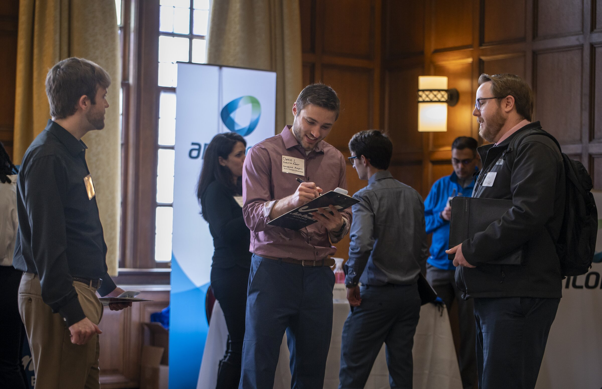
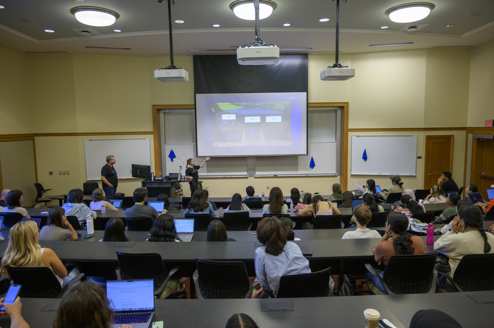

A Central Hub for Partnership Resources
Engaged learning at UMSI connects students with organizations across sectors, scales, and missions. This page explains the kinds of partners students and faculty may work with, how partnerships are established, and where to find additional support from other units across the University of Michigan.
Who Are Our Campus Partners?
ELO partners span a wide range of sectors and scales, including:
- Government & civic organizations: Local and federal agencies, such as the City of Ann Arbor and the National Park Service, seeking to improve public-facing information tools and services.
- Cultural & heritage institutions: Museums, libraries, and archives, such as the Library of Congress, working to organize, preserve, or share collections and knowledge.
- Nonprofits & social services: Grassroots and community-based organizations, often in southeast Michigan and beyond, addressing local information and technology needs.
- Industry & tech organizations: Companies ranging from startups to Fortune 500 tech organizations, proposing information-based projects for student teams.
- Global partners: International organizations and collaborators, including human rights and advocacy groups, working across borders on shared information challenges.
Every partnership is reciprocal. Your team contributes developing information expertise, while your partner contributes real-world context, lived experience, and organizational knowledge.

How Partnerships Are Accessed
Most UMSI engaged learning partnerships are identified, vetted, and coordinated through the Engaged Learning Office. Students and faculty do not need to independently source organizations, and the ELO is always open to exploring new partnerships!
If you are a faculty member interested in incorporating a client-based project into your course, or a student interested in a specific project area, contact the ELO to discuss current and upcoming partnership opportunities.
Client-based Courses
Many UMSI courses include client-based projects, where students work with a partner organization to address a real-world information challenge. These courses are designed to provide students with hands-on experience while delivering value to the partner organization.
Client-based courses at UMSI include:

Additional Campus Partner Resources
Cross-disciplinary partner organizations across the University of Michigan offer specialized instructional support and workshop sessions that you can incorporate into your curriculum.
Focus: Prepares undergraduate and graduate students for respectful, reciprocal community-engaged learning in civic and non-profit settings.
Note: All first-year MSI and MHI students participate in a foundational Ginsberg workshop through SI 500.
Action: Submit a Ginsberg Center Support Request (please request at least one month in advance).
Focus: Educational sessions on socially engaged design, sociotechnical thinking, human-centered approaches, and community ethics in technical applications.
Action: Explore C-SEED Educational Modules.
Focus: Specialized instruction on source evaluation, special collections, literature search strategies, poster presentations, data visualization, and citation management tools.
Action: Request U-M Library Instruction.